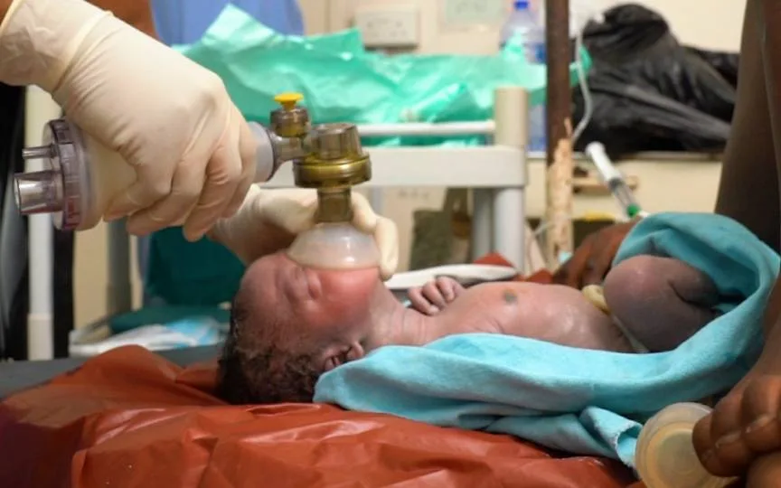
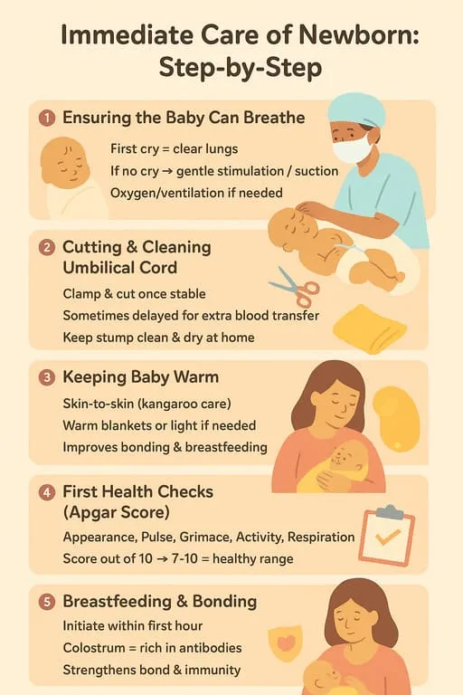
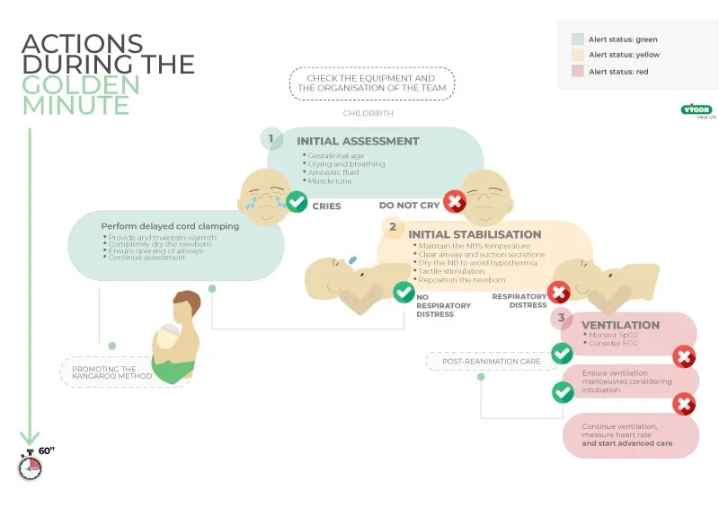
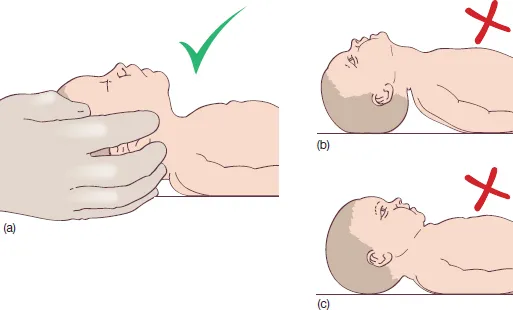
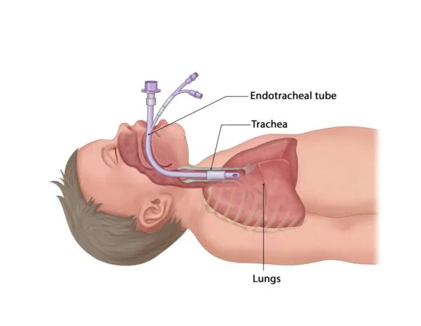
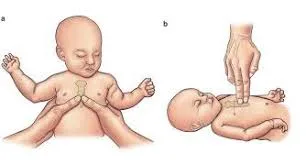

Expanded Nursing Uganda Explanation
Resuscitation should be understood beyond a short definition. Link the concept to patient history, focused assessment, common risks, nursing priorities, documentation and evaluation of outcomes.
01 Overview
- Neonatal Resuscitation refers to a series of interventions initiated immediately after birth to support the establishment of breathing and circulation in a newborn who is not breathing effectively or has inadequate circulation.
- Resuscitation is a means of restoring life to a baby from the state of asphyxia (Devi, Upendra, and Bard, 2017).
Asphyxia in a newborn refers to a condition where there is impaired blood gas exchange, leading to a progressive decrease in oxygen (hypoxemia) and an increase in carbon dioxide (hypercarbia), often resulting in acidosis.
- More simply, it is about "helping a baby to breathe," which is the most critical physiological adjustment required at birth.
- High Vulnerability of the Neonatal Period: The first 28 days of life is called neonatal period and incontrovertibly, it is the most vulnerable and high risk time in life because of the highest mortality and morbidity that occur in this period. The day of birth is the riskiest time to a baby" (Sajjad, 2012; and WHO, 2015). A significant proportion of neonatal deaths occur on the first day of life, many of which are attributable to birth asphyxia.
- Prevention of Mortality: Effective and timely resuscitation can directly prevent death in newborns who fail to transition successfully from intrauterine to extrauterine life.
- Prevention of Morbidity and Long-Term Disability: Prevent brain injury and other organ damage resulting from prolonged oxygen deprivation. Timely resuscitation minimizes the duration of hypoxemia and acidosis, thereby reducing the risk of such devastating outcomes.
- Enabling Physiological Transition: Birth involves a physiological transition from relying on the placenta for gas exchange to establishing independent pulmonary respiration and circulatory changes. Approximately 85% of newborns transition successfully without intervention. However, about 10-15% require some assistance, and about 1% require extensive resuscitative measures. Resuscitation provides the necessary support for these babies to make this critical transition.
- Global Health Impact: Improving access to and quality of neonatal resuscitation services is a key strategy for achieving global maternal and child health targets, particularly in low-resource settings where the burden of birth asphyxia is highest.
- Initiate and/or Restore Respiration/Breathing: This is the most immediate and primary goal, as establishing effective breathing is fundamental to oxygenation.
- Establish Adequate Circulation: While not explicitly listed as a separate aim in your text, it's intrinsically linked to respiration. Effective breathing improves oxygenation, which then supports heart function and systemic circulation.
- Prevent Infection: Although not a direct resuscitation step, ensuring aseptic technique during resuscitation and appropriate post-resuscitation care are vital to prevent secondary complications in a vulnerable neonate.
- Prevent Other Complications: This is a broad goal encompassing the prevention of brain injury (HIE), organ dysfunction, and ensuring overall physiological stability.
- Prevent Hypothermia: Maintaining the newborn's temperature is critical from birth, throughout resuscitation, and into post-resuscitation care, as hypothermia can worsen acidosis and impair resuscitation efforts.
These factors are related to the mother's health, pregnancy complications, or circumstances surrounding the birth.
- Advanced Maternal Age: (e.g., usually >35 years)
- Maternal Illnesses/Conditions: Diabetes (gestational or pre-existing)
- Hypertension (e.g., pre-eclampsia, eclampsia, chronic hypertension)
- Cardiac or renal disease
- Thyroid disease
- Anemia
- Infections (e.g., Group B Streptococcus, herpes simplex virus, HIV)
- Substance Abuse: Opioid use (can cause neonatal abstinence syndrome)
- Alcohol abuse
- Smoking
- Medications: Maternal sedatives/analgesics administered close to delivery (can cause neonatal respiratory depression).
- Magnesium sulfate administration (for pre-eclampsia, can cause neonatal respiratory and neuromuscular depression).
- Lack of Antenatal Care: Poor or no antenatal care prevents the identification and management of potential risks.
These factors are directly related to the fetus or events occurring during labor and delivery.
- Prematurity: The most significant risk factor. Premature infants have immature lungs, poor temperature control, and vulnerable brains. Extremely preterm (<28 weeks)
- Very preterm (28-32 weeks)
- Moderate to late preterm (32-37 weeks)
- Post-term Pregnancy: (>42 weeks gestation), associated with placental insufficiency.
- Multiple Gestation: (Twins, triplets, etc.) increases the risk of prematurity, growth restriction, and delivery complications.
- Abnormal Fetal Heart Rate (FHR) Pattern: Persistent bradycardia
- Repetitive late decelerations
- Prolonged decelerations
- Loss of variability, indicating fetal distress.
- Meconium-Stained Amniotic Fluid: (especially thick meconium), indicates fetal stress and risk of meconium aspiration syndrome.
- Prolonged Rupture of Membranes (PROM): Increases risk of infection.
- Chorioamnionitis: (Infection of the amniotic fluid and membranes), leads to neonatal sepsis and respiratory distress.
- Abnormal Presentation: (e.g., breech, transverse lie), often requires C-section and can be associated with birth trauma.
- Placental Abnormalities: Placenta previa
- Abruptio placentae (premature separation of the placenta)
- Vasa previa, leading to fetal hemorrhage and hypoxia.
- Cord Complications: Nuchal cord (cord around the neck)
- Cord prolapse (cord falling through the cervix before the baby)
- True knot in the cord.
- Fetal Anomalies: Congenital malformations affecting respiratory, cardiac, or neurological systems.
- Intrapartum Complications: Prolonged labor
- Precipitous labor (very rapid labor)
- Forceps or vacuum extraction delivery
- Cesarean section (especially elective C-section without labor, as it can be associated with transient tachypnea of the newborn).
- Shoulder dystocia.
- Fetal Growth Restriction (FGR) / Small for Gestational Age (SGA): Indicates placental insufficiency and compromised fetal reserves.
- Lack of Fetal Movement: Reported by mother.
This objective focuses on the immediate actions taken when a baby is born, particularly during the critical first minute of life, often referred to as the "Golden Minute." This period is crucial for assessing the newborn's transition and initiating any necessary interventions quickly to prevent adverse outcomes.
- Temperature regulation. Ensure adequate warmth for the baby to prevent hypothermia which leads to decreased metabolic which cause additional stress to the baby.
- Ensure adequate oxygenation to the baby to prevent hypoxia by administration of oxygen and monitoring oxygen perfusion. An endotracheal tube should be inserted and oxygen administered
- Prevention of hypoglycemia by regular monitoring blood glucose and if risk for hypoglycemia is identified administer dextrose as per prescription.
Before any birth, and especially when risk factors (as discussed previously) are present, it is paramount to ensure the resuscitation area is prepared and all necessary equipment is immediately available and functional.
- Personal Protective Equipment: Surgical gloves (minimum for resuscitator).
- Other PPE (gowns, masks, eye protection) as per institutional policy.
- Warmth Management: Radiant warmer or heat lamp (integrated into the resuscitation table).
- Pre-warmed towels or blankets.
- Temperature probe/sensor (to monitor infant's temperature).
- Plastic wrap/bag (for extremely preterm infants).
- Airway and Suction: Bulb syringe.
- Suction catheters (e.g., 6F, 8F, 10F) with mechanical suction apparatus (set to 80-100 mmHg).
- Meconium aspirator (if meconium is present and baby is non-vigorous, though routine use has decreased).
- Ventilation Equipment: Self-inflating bag, flow-inflating bag, or T-piece resuscitator.
- Face masks (various sizes: preterm, term, full-term/neonate).
- Oxygen source (blender if available to provide specific FiO2, flowmeter).
- Nasal prongs/cannula (for oxygen administration post-resuscitation).
- Intubation Equipment: Laryngoscope with straight blades (e.g., Miller 0, 1 for term/preterm).
- Spare laryngoscope handle and bulbs.
- Endotracheal tubes (ETTs): range of sizes (e.g., 2.5, 3.0, 3.5, 4.0 mm internal diameter).
- Stylet (for ETT insertion).
- CO2 detector (colorimetric or capnography) for confirming ETT placement.
- Scissors, tape/ETT holder for securing ETT.
- Naso-gastric/oro-gastric tube (e.g., 8F) for gastric decompression after prolonged PPV.
- Circulation and Medication Equipment: Syringes (various sizes: 1mL, 3mL, 5mL, 10mL, 20mL).
- Needles/blunt fill devices.
- Umbilical venous catheterization tray (for rapid vascular access if medications are needed).
- Sterile water and normal saline (for flushing).
- Pediatric stethoscope.
- Medications (Prepared and Labeled): Adrenaline (Epinephrine) 1:10,000 solution:
- Volume Expanders: 0.9% Normal Saline or Ringer's Lactate.
- Dextrose 10%: For hypoglycemia management post-resuscitation.
- Sodium Bicarbonate 4.2%: For prolonged resuscitation with documented metabolic acidosis.
- Monitoring and Documentation: Timer (clock watch).
- Pulse oximeter with neonatal probe (pre-ductal placement, right hand/wrist).
- Displayed charts for resuscitation steps (e.g., NRP algorithm).
- Mothers' chart/patient notes.
- Resuscitation table: Stable, readily accessible, with radiant warmer.
- Light source: Adequate, adjustable lighting.
- Proximity: Situated near the delivery area for immediate access.
Upon delivery, a rapid assessment is made to determine if the newborn requires routine care or resuscitation. This assessment should take no longer than 30 seconds to allow for timely intervention within the first minute of life.
The decision to proceed with routine care or to initiate resuscitation is based on answering these three questions quickly:
- Is the baby term gestation? (i.e., ≥ 37 weeks)
- Does the baby have good tone? (i.e., flexed limbs, active movement)
- Is the baby breathing or crying? (i.e., strong, regular respiration, not gasping or apneic)
- YES to all three questions: Proceed with Routine Care (provide warmth, dry, skin-to-skin, observe).
- NO to any of these questions: Proceed immediately to the Initial Steps of Stabilization .
If the newborn does not meet the criteria for routine care, the following initial steps of stabilization must be performed quickly and effectively, ideally within the first 30-60 seconds after birth (the "Golden Minute").
- Provide Warmth and Dry: Place the naked newborn under a pre-heated radiant warmer.
- Dry the baby thoroughly with pre-warmed towels/blankets. This removes amniotic fluid, which prevents evaporative heat loss, and provides tactile stimulation.
- Remove any wet cloth after drying.
- Position and Clear Airway: Position baby’s head in a neutral or slightly extended “sniffing position”.
- Place a small towel roll under the baby’s shoulders to help maintain this position, ensuring the airway is open.
- Clear the airway (if necessary): Suction blood or mucus from the mouth and then the nose using a bulb syringe or suction catheter ONLY if secretions are obstructing breathing or the baby is gasping.
- Assess Breathing and Heart Rate: After completing the initial steps of warmth, drying, positioning, and suctioning (if needed), reassess the newborn. Look for effective breathing (regular, sustained respiratory effort, no gasping).
- Assess Heart Rate (HR): Auscultate the chest with a stethoscope or palpate the umbilical cord stump for 6 seconds and multiply by 10.
- Intervention for Breathing Issues: If the baby is apneic (not breathing) or gasping, OR if the Heart Rate is less than 100 bpm despite initial steps: Begin Positive-Pressure Ventilation (PPV). Stand at the baby's head.
- Apply an appropriately sized mask to the baby’s face, ensuring it covers the mouth and nose to form a good seal.
- Give five initial inflation breaths (each 2-3 seconds duration). This aims to establish functional residual capacity in the lungs.
- Observe response by looking for chest movements (chest rising) and listen for increasing heart rate.
- Troubleshooting: If the chest does not rise, reapply the mask, reposition the baby’s head, and consider suctioning again (MR. SOPA mnemonic: Mask adjustment, Reposition airway, Suction mouth and nose, Open mouth, Pressure increase, Alternate airway).
- Continue ventilating at a rate of 30-40 breaths per minute.
- Intubation consideration: If PPV with a mask is ineffective, prolonged, or if specific conditions require it, intubation should be considered earlier than 20 minutes . Intubation provides a more secure airway for ventilation and allows for direct tracheal suction if needed.
- Indication for Chest Compressions: Chest compressions should be initiated if the heart rate is less than 60 beats per minute (bpm) AFTER at least 30 seconds of effective positive-pressure ventilation (PPV).
- Technique: The preferred method is the Two-Thumb Encircling Technique: Wrap your hands around the baby’s torso, placing both thumbs over the lower third of the sternum (just below an imaginary line between the nipples).
- Alternatively, the two-finger technique can be used if one resuscitator is present or if the encircling method is not feasible.
- Rate and Ratio: Chest compressions are performed at a rate of 90 compressions per minute, coordinated with 30 ventilations per minute.
- This provides a ratio of 3 compressions to 1 ventilation , aiming for 120 "events" (compressions + breaths) per minute.
- Depth: Compress the chest approximately one-third of the anterior-posterior diameter of the chest. Allow for complete recoil after each compression.
- Indication for Medications: Medications are generally reserved for when the heart rate remains below 60 bpm despite effective ventilation and chest compressions.
- Establish vascular access ( umbilical venous catheter - UVC) prior to medication administration.
- Adrenaline (Epinephrine): Indication: Heart rate remains < 60 bpm despite at least 30 seconds of effective PPV and at least 60 seconds of effective chest compressions coordinated with PPV.
- Dose: 0.01 to 0.03 mg/kg IV (intravenous) or IO (intraosseous) of a 1:10,000 solution .
- Repeat: May be repeated every 3-5 minutes if needed.
- Volume Expanders (e.g., Normal Saline 0.9%): Indication: Suspected hypovolemia (e.g., pallor, poor perfusion, weak pulse, lack of response to resuscitation efforts) and heart rate remains < 60 bpm despite ventilation, compressions, and epinephrine.
- Dose: 10 mL/kg IV over 5-10 minutes.
- Dextrose 10%: Indication: Not typically given during acute resuscitation unless documented hypoglycemia. Administered after stabilization if blood glucose is low (<2.5 mmol/L).
- Dose: 2 mL/kg of 10% dextrose solution IV.
- Sodium Bicarbonate 4.2%: Indication: For prolonged resuscitation or documented metabolic acidosis. Not a first-line drug.
- Dose: 2 mEq/kg (equivalent to 4 mL/kg of 4.2% solution) IV slowly.
- Continue to monitor response to resuscitation closely. (This includes heart rate, breathing, oxygen saturation, and clinical appearance).
- APGAR Score: The Apgar score is assessed at 1 and 5 minutes after birth, and every 5 minutes thereafter if the score is less than 7, until 20 minutes of age. It's a snapshot of the baby's condition and response to resuscitation.
- If the baby responds to resuscitation and stabilizes , keep the baby warm and transfer to a special care unit (e.g., NICU, SCN) for ongoing monitoring and supportive care.
- If the baby is breathing well and stable: Encourage skin-to-skin contact with the mother.
- Encourage breastfeeding.
- Provide reassurance to the mother and family.
- Discontinuation of Resuscitation: If there is no detectable heart rate after 10-20 minutes of complete and adequate resuscitation efforts, discontinuation of resuscitation should be considered in consultation with the medical team and family.
Positive-Pressure Ventilation (PPV) is the most critical and frequently performed intervention in neonatal resuscitation. Its primary goal is to establish functional residual capacity (FRC) in the lungs and provide oxygenation and ventilation to newborns who are apneic (not breathing), gasping, or have a heart rate below 100 beats per minute (bpm) despite initial steps. Effective PPV can rapidly improve heart rate, oxygen saturation, and clinical condition, often preventing the need for more advanced interventions like chest compressions or medications.
The success of PPV hinges on three key principles:
- Effective Mask Seal: The mask must form a tight, leak-free seal around the baby's mouth and nose to ensure that the delivered positive pressure enters the lungs and does not escape.
- Open Airway: The baby's airway must be properly positioned (sniffing position) to allow air to flow freely into the trachea and lungs. Obstructions (e.g., secretions, incorrect head position) will render PPV ineffective.
- Adequate Pressure and Rate: Sufficient pressure is needed to inflate the lungs, but excessive pressure must be avoided to prevent lung injury. The rate of ventilation must be appropriate to ensure both oxygenation and CO2 removal.
PPV is indicated when a newborn is:
- Apneic: Not breathing at all.
- Gasping: Irregular, ineffective breaths.
- Heart Rate < 100 bpm: Despite the initial steps of warmth, drying, positioning, and clearing the airway (if necessary).
The primary equipment used for PPV includes:
- Ventilation Device: Self-inflating Bag: The most common device. It refills automatically after each squeeze and requires an oxygen source for supplemental oxygen. It will deliver room air if no oxygen is attached.
- Flow-inflating Bag (Anesthesia Bag): Requires a compressed gas source and a tight mask seal to inflate. Allows for precise control of pressure and oxygen concentration but requires more skill.
- T-piece Resuscitator (e.g., Neopuff): A gas-powered, flow-controlled device that delivers consistent peak inspiratory pressure (PIP) and positive end-expiratory pressure (PEEP). Often preferred for its precision and consistency.
- Face Mask: Proper size is crucial. Masks are available in various sizes (preterm, term/neonate). The mask should cover the bridge of the nose, the mouth, and the chin without extending over the eyes or compressing the neck.
- Transparent masks allow for visualization of the baby's mouth and color.
- Oxygen Source: Oxygen blender (if available) allows for delivery of specific oxygen concentrations (FiO2).
- Flowmeter (usually set to 5-10 L/min for resuscitation).
- Pulse Oximeter: Essential for monitoring oxygen saturation (SpO2) and heart rate during PPV. The probe should be placed on the right wrist or hand (pre-ductal site).
- Position the baby: Place the baby on their back under the radiant warmer, with the head in a neutral or slightly extended "sniffing position" (as detailed in Objective 3). A rolled towel under the shoulders can help.
- Select the correct mask size: Ensure it covers the nose and mouth without touching the eyes or overhanging the chin.
- Apply the mask: Position yourself at the baby's head.
- Place the mask gently but firmly on the baby's face.
- Use the "C-E grip" (or similar): The "C" is formed by the thumb and index finger pressing the mask edges to the face, while the "E" is formed by the remaining fingers lifting the jaw forward to maintain an open airway. Avoid pressing on the baby's soft tissues under the chin, which can obstruct the airway.
- Initial Breaths: Begin with 5 breaths, each lasting 2-3 seconds. These are sometimes called "inflation breaths" or "ventilating breaths" as they are crucial for clearing fluid from the lungs and establishing functional residual capacity.
- Pressure: The initial pressure required can vary. For a term baby, initial pressures of 20-25 cm H2O may be sufficient.
- For preterm babies or those with very stiff lungs, higher pressures (e.g., 25-30 cm H2O) may be needed to achieve initial chest rise.
- Many devices have pressure gauges; familiarize yourself with how to achieve the target pressure.
- Observe for Chest Rise: The most important indicator of effective ventilation is a gentle, symmetrical rise and fall of the chest with each breath. If no chest rise: Immediately re-evaluate the mask seal, reposition the airway, and consider clearing secretions (MR. SOPA mnemonic - discussed below).
- Rate: After the initial 5 breaths, continue PPV at a rate of 30-40 breaths per minute (approximately one breath every 1.5-2 seconds).
- Pressure: Adjust pressure as needed to achieve gentle chest rise. Once the lungs are open, less pressure is often required.
- Oxygen Concentration (FiO2): For term infants: Start with 21% (room air).
- For preterm infants (<35 weeks): Start with 21-30% oxygen.
- Adjust oxygen based on pulse oximetry readings. Target SpO2 values increase over the first 10 minutes of life (e.g., 60-65% at 1 min, 80-85% at 5 min, 85-95% at 10 min).
Reassess the baby approximately every 30 seconds during PPV.
- Heart Rate (HR): The most important indicator. PPV is effective if the HR is increasing, especially if it rises above 100 bpm.
- Breathing: Look for spontaneous breathing efforts.
- Oxygen Saturation (SpO2): Monitor with a pulse oximeter.
- Color: Observe the baby's color (pinker is good).
- Tone: Increased activity and muscle tone.
If PPV is not resulting in a rising heart rate or visible chest movement, quickly go through the following troubleshooting steps:
- M - Mask adjustment: Reapply the mask to achieve a better seal.
- R - Reposition airway: Adjust the head position to ensure an open airway.
- S - Suction mouth and nose: Clear any secretions that may be blocking the airway.
- O - Open mouth: Gently open the baby's mouth, sometimes just a finger's width, to facilitate airflow.
- P - Pressure increase: Gradually increase the inspiratory pressure (e.g., by 5-10 cm H2O increments) until chest rise is observed.
- A - Alternate airway: If PPV remains ineffective despite all the above, consider advanced airway interventions such as endotracheal intubation .
PPV can be gradually discontinued when the baby meets the following criteria:
- Heart rate is consistently > 100 bpm.
- The baby is breathing spontaneously and effectively.
- Oxygen saturation is within the target range for age on minimal or no supplemental oxygen.
Discontinuation can be done by gradually decreasing the rate of PPV while observing the baby's spontaneous breathing, or by stopping completely if the baby is breathing strongly and effectively.
Chest compressions are an intervention in neonatal resuscitation, indicated when a newborn's heart rate remains dangerously low despite effective positive-pressure ventilation (PPV). The primary goal of chest compressions is to maintain blood flow to the vital organs, particularly the heart and brain, until the baby's own heart can resume an effective rhythm. This intervention is always performed in conjunction with PPV.
For chest compressions to be effective, several principles must be adhered to:
- Correct Indication: Compressions are only started after a defined period of effective PPV has failed to raise the heart rate.
- Proper Location: Compressions must be delivered over the correct anatomical landmark (sternum) to be effective and minimize injury.
- Adequate Depth: Compressions must be deep enough to create adequate blood flow but not so deep as to cause trauma.
- Appropriate Rate: The rate must be fast enough to maintain perfusion, but allow for proper coordination with ventilations.
- Complete Recoil: Allowing the chest to fully recoil between compressions is essential for adequate cardiac filling and coronary perfusion.
- Coordination with Ventilation: Chest compressions must be perfectly coordinated with PPV to ensure both circulation and oxygenation.
Chest compressions are indicated when:
- The newborn's heart rate is below 60 beats per minute (bpm) .
- This low heart rate persists despite at least 30 seconds of effective positive-pressure ventilation (PPV) , confirmed by visible chest rise.
There are two main techniques for performing chest compressions in newborns:
- Two-Thumb Encircling Technique (Preferred): Position: The resuscitator stands at the foot end of the baby (or to the side if more convenient for the team). Both hands encircle the baby's torso.
- Hand Placement: Place both thumbs side-by-side or one over the other (depending on baby size and hand size) on the lower third of the sternum, just below an imaginary line connecting the nipples.
- Compression: Use the pads of the thumbs to compress the sternum. The fingers support the baby's back, providing counter-pressure and stability.
- Advantages: This technique generally produces higher peak systolic blood pressure, better coronary artery perfusion pressure, and less fatigue for the resuscitator compared to the two-finger technique. It also allows for continuous ventilation.
- Two-Finger Technique (Alternative): Position: The resuscitator is positioned to the side of the baby.
- Hand Placement: Place the tips of the index and middle fingers (or middle and ring fingers) of one hand on the lower third of the sternum, just below an imaginary line connecting the nipples.
- Compression: Use the tips of these two fingers to compress the sternum. The other hand can be placed under the baby's back for support.
- Advantages: This technique is often used if there is only one resuscitator or if vascular access is being obtained via the umbilical cord while compressions are ongoing.
- Disadvantages: Can be more tiring, may produce less effective blood flow, and may interfere with effective ventilation if not coordinated properly.
- On the lower third of the sternum , just below an imaginary line connecting the nipples. Avoid compressing over the xiphoid process (bottom tip of the sternum) as this can cause liver injury.
- Compress the sternum to a depth of approximately one-third of the anterior-posterior (AP) diameter of the chest .
- This depth ensures adequate cardiac output while minimizing the risk of injury. Allow for complete release and recoil of the chest wall after each compression to allow for cardiac refilling.
- Compressions should be delivered at a rate of 90 compressions per minute .
02 Nursing Uganda Clinical Lens
Use Resuscitation as a practical nursing topic, not only a memorized definition. Prioritize airway, breathing, circulation, pain, asepsis, wound healing and early complication detection.
- What to understand first: define resuscitation, identify the normal or expected pattern, then explain what changes when the patient is unwell.
- Why it matters in care: the nurse must recognize risk early, explain findings clearly, document accurately and know when to escalate.
- How to revise it: connect each point to assessment, nursing diagnosis or care problem, intervention, rationale and evaluation.
03 Assessment Guide
- Vital signs, pain, bleeding, perfusion, level of consciousness and injury pattern.
- Wound appearance, drainage, odour, swelling, temperature and surrounding skin.
- Fluid balance, mobility, nutrition, surgical site risk and ordered investigations.
04 Nursing Priorities, Rationales and Outcomes
- Stabilize urgent problems first, then prepare for investigations or theatre care.
- Maintain aseptic technique, pain control, wound care and documentation.
- Prevent shock, infection, pressure injury, deep vein thrombosis and delayed healing.
The rationale for these priorities is patient safety: nursing actions should prevent deterioration, reduce discomfort, support recovery and create clear evidence for the next caregiver.
- Expected outcome: The patient remains stable, wound healing progresses, pain is controlled and complications are recognized early.
05 Patient Teaching and Revision Check
- Explain resuscitation in simple language the patient or caregiver can repeat back.
- Teach warning signs, medicine or follow-up instructions, hygiene or lifestyle points where relevant.
- For exams, prepare a short answer using: definition, causes or risk factors, signs, assessment, management, complications and prevention.
- For ward practice, document baseline findings, actions taken, patient response and the plan for review.
Illustrations and Diagrams (16)







8 more diagrams available, open the lesson for full illustrations.
Related Video Lectures
Watch nursing lecture videos on YouTube for this topic. Opens in a new tab.
Watch on YouTubeExternal link: YouTube may use its own cookies and terms. Nursing Uganda is not affiliated with YouTube.